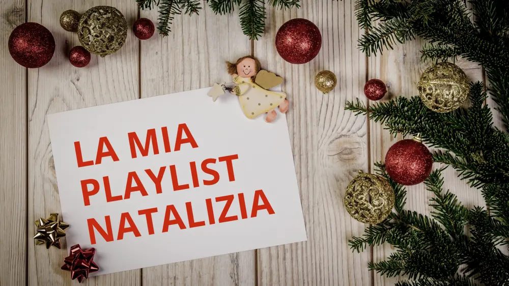
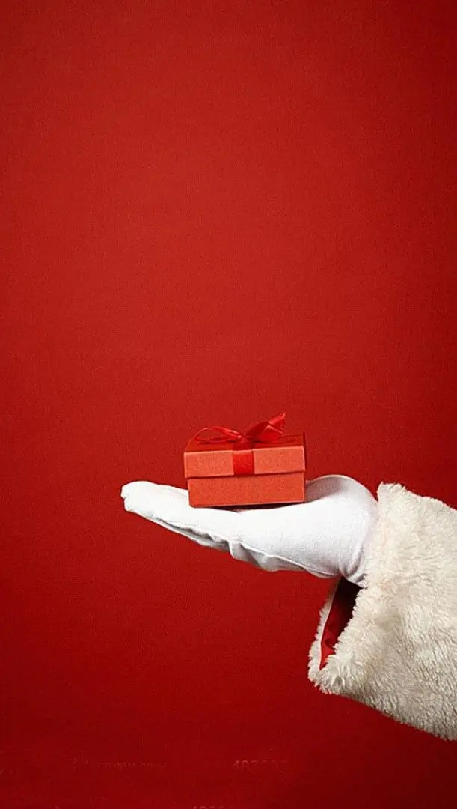

La mia playlist natalizia

Quest'anno, anche se in ritardo, sono comunque sempre in tempo per fare una classifica di canzoni più belle e più conosciute del periodo natalizio, ovvero la mia playlist natalizia.
L'anno scorso ho fatto una classifica dei film di Natale più belli secondo il mio parere.
Partiamo subito con i titoli della playlist natalizia e i videoclip:
- Mariah Carey - all i want for christmas is you
- Wham! - last christmas
- Josè Feliciano - feliz navidad
- Bobby Helms - Jingle bell rock
- We wish you marry christmas
- Astro del ciel
- Kelly Clakson - white christmas
- Michael Bublè - Santa Claus is coming to town
- Meghan Trainer - holly jolly christma
- Dean Martin - let it snow!
- Andrea Boccelli - bianco natale
- John Lennon Lennon happy xmas
E direi di fermarci qui con la playlist natalizia perché tutte queste canzoni mettono in moto tutti i sentimenti e le emozioni che abbiamo dentro.
Con questa classifica tutta canora, io voglio fare i miei più sentiti auguri di un buon natale a tutti.
Nonostante il periodo non è dei migliori, la pandemia ci ha però insegnato che bisogna apprezzare i momenti che arrivano ancora di più perché non possiamo sapere cosa ci riserva il futuro.
Un futuro inteso anche domani, un futuro non più a lungo termine come siamo abituati a vedere, ma un futuro davvero prossimo.
Il mio auguro è che voi possiate trovare sotto l'albero, la serenità che più cercate senza rimorsi e nessun rimpianto.
La serenità che ci è stata un po' limitata ma che non finiamo mai di aspettarla.
Con la speranza che il nuovo anno possa portare solo buone notizie!

AUGURI!